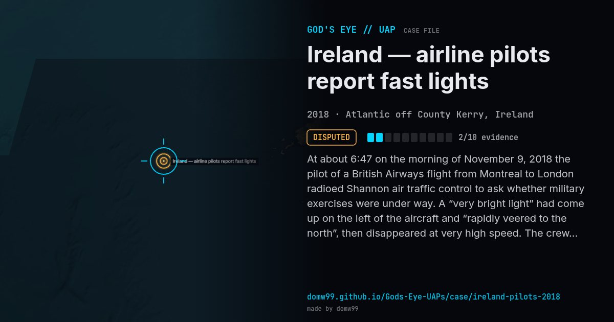

Ireland — airline pilots report fast lights

At about 6:47 on the morning of November 9, 2018 the pilot of a British Airways flight from Montreal to London radioed Shannon air traffic control to ask whether military exercises were under way. A “very bright light” had come up on the left of the aircraft and “rapidly veered to the north”, then disappeared at very high speed. The crew of a Virgin Atlantic flight reported two bright lights that banked to the right and climbed away at what the pilot called “astronomical” speed, “like Mach 2”. Controllers saw nothing on radar, and no military exercises were taking place. The Irish Aviation Authority said it would investigate by confidentially interviewing the pilots. More than one crew reported it, and the story was carried by news outlets around the world.
Explanation
One pilot suggested a meteor or an object in re-entry, and an astronomer at the Armagh Observatory said the lights were most likely meteors. Air traffic control saw nothing on radar and no military exercises were running, so nothing has been confirmed.
What was seen
Shape: Very bright lights moving at high speed
Witnesses: Crews of a British Airways and a Virgin Atlantic flight, and others
Duration: Seconds
Sources
- Time — Irish authorities investigate UFO sightings by commercial pilots
- CBS News — Pilots report seeing UFO “moving so fast” off the coast of Ireland
- Euronews — UFO sightings reported by pilots over Ireland
Browse
- 2010s
- Disputed
- Aviation encounters
- Pilot and aircrew witnesses
- Audio recordings or radio transcripts
- Lights and fireballs